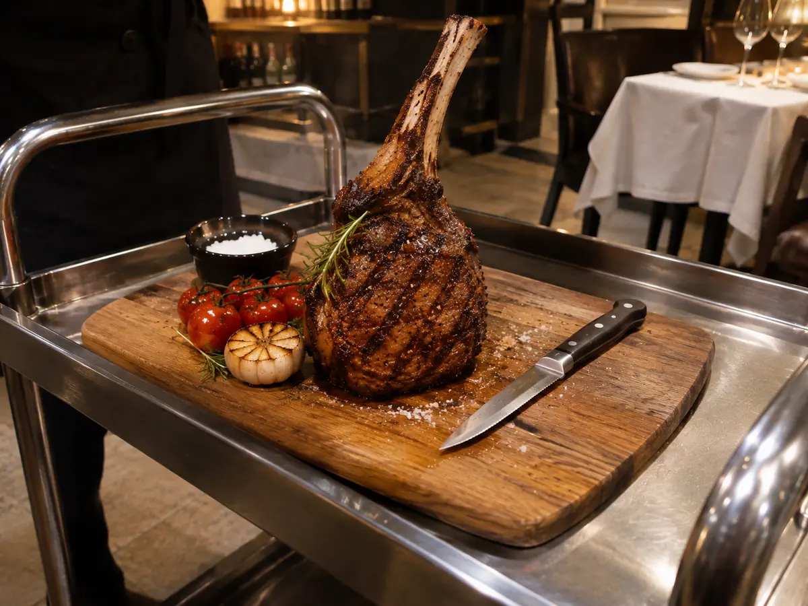
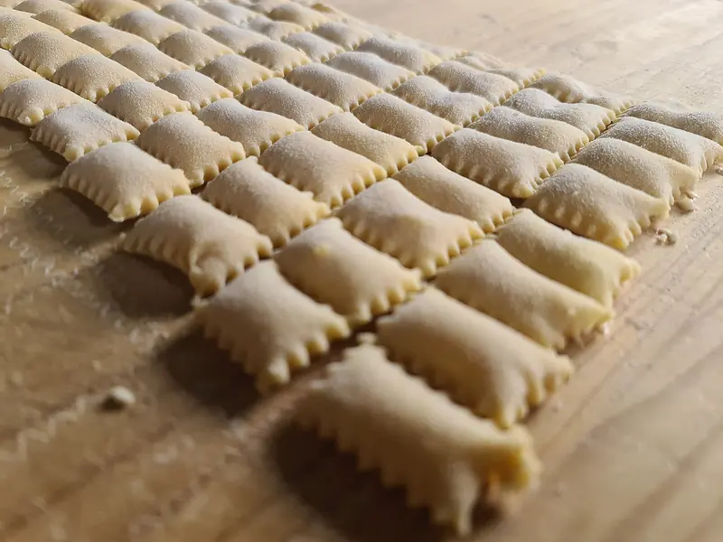
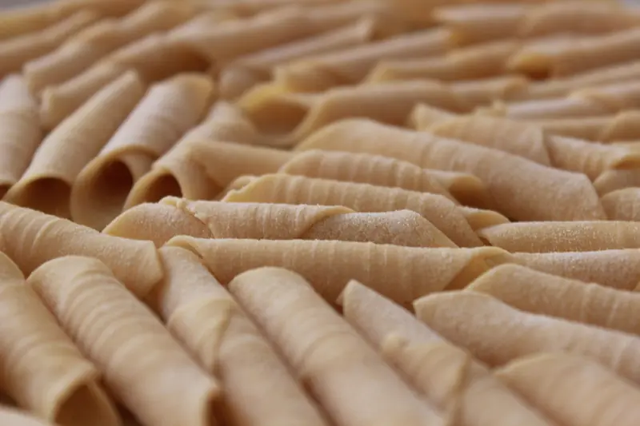
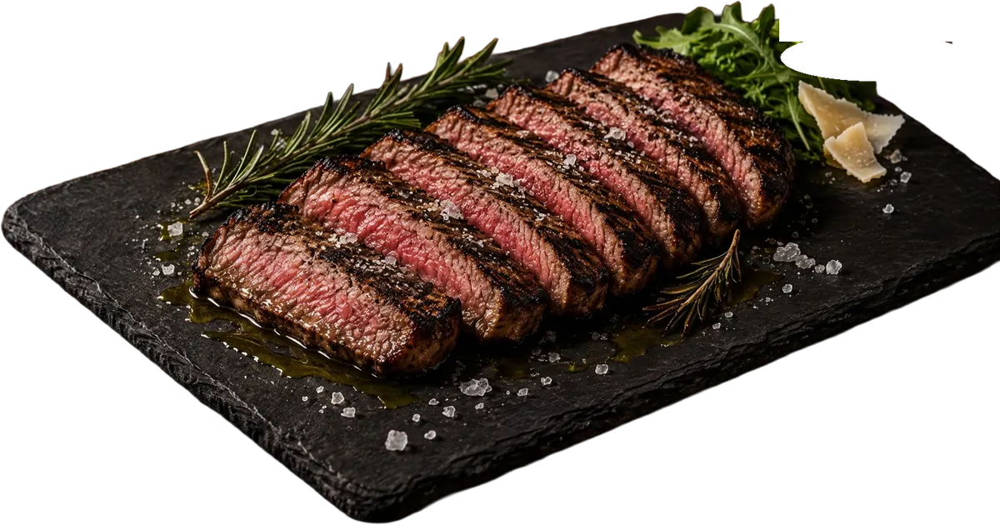
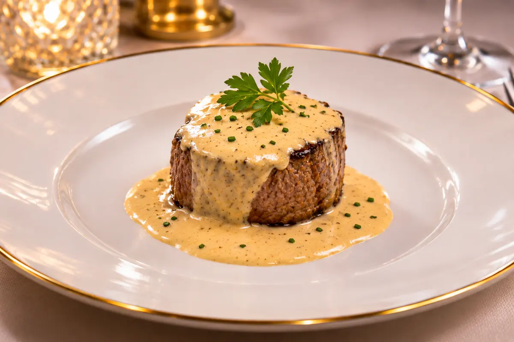
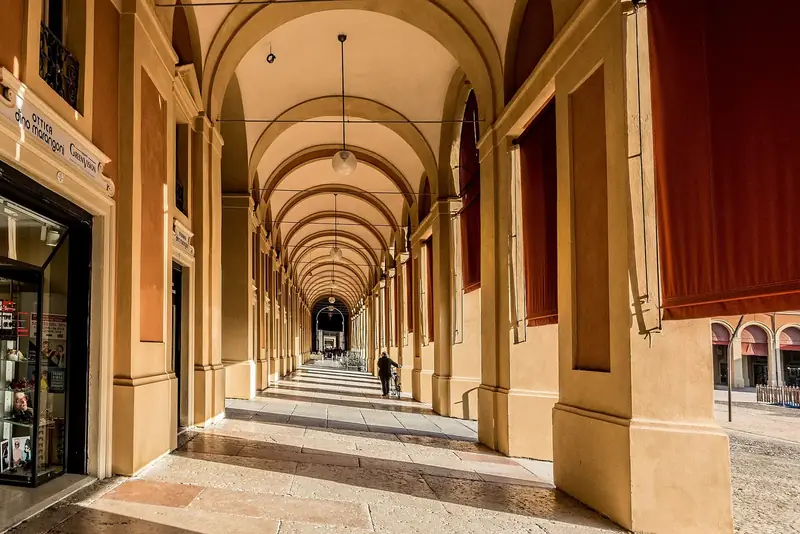

Costata con l’osso al carrello
Tagliata al tavolo, con aglio arrosto, pomodorini e sale grosso.
Ristorante · Via di Giù 56 · Lugo
Pasta fresca tirata a mano ogni mattina, carni alla griglia e arrosti cotti con pazienza. Una tavola elegante nel cuore della Romagna.
La casa
Dall’8 marzo 1988 I Tre Fratelli cucina la Romagna di casa: uova e farina sul tagliere, il mattarello, il forno acceso per gli arrosti. Niente scorciatoie, gli stessi gesti da più di trentacinque anni.
Si viene per un pranzo di lavoro, una cena tra amici, la domenica in famiglia. E da Ravenna, Faenza, Imola e Bologna si arriva in meno di un’ora.



La sfoglia al mattino, gli arrosti nel forno per ore.
I Tre Fratelli · Lugo di Romagna
Le carni
Tagli selezionati alla griglia, arrosti che riposano a lungo nel forno. Arrivano in tavola al punto giusto, con il loro fondo di cottura.

Il gusto della pazienza
I piatti della casa
La costata con l’osso arriva sul carrello e si taglia davanti a voi. Il filetto si serve in porcellana, con la sua salsa calda.

Tagliata al tavolo, con aglio arrosto, pomodorini e sale grosso.

Cuore di filetto rosato, salsa vellutata, erba cipollina.
Orari
Controllo l’orario…
Lo stato è calcolato sull’ora italiana. Nei giorni festivi e ad agosto gli orari possono cambiare: in caso di dubbio scrivici su WhatsApp.
Prenota su WhatsAppoppure chiama il 335 678 0073
| Martedì | 12:00 – 14:30 | 19:00 – 22:00 |
|---|---|---|
| Mercoledì | 12:00 – 14:30 | 19:00 – 22:00 |
| Giovedì | 12:00 – 14:30 | 19:00 – 22:00 |
| Venerdì | 12:00 – 14:30 | 19:00 – 22:00 |
| Sabato | 12:00 – 14:30 | 19:00 – 22:00 |
| Domenica | 12:00 – 14:30 | 19:00 – 22:00 |
| Lunedì | Chiuso | |
Dove siamo
Siamo in Via di Giù 56, a pochi minuti dal centro storico, dalla Rocca Estense e dal Pavaglione. Uscita autostradale Lugo-Cotignola sulla A14 dir. Parcheggio in zona.
Apri le indicazioni